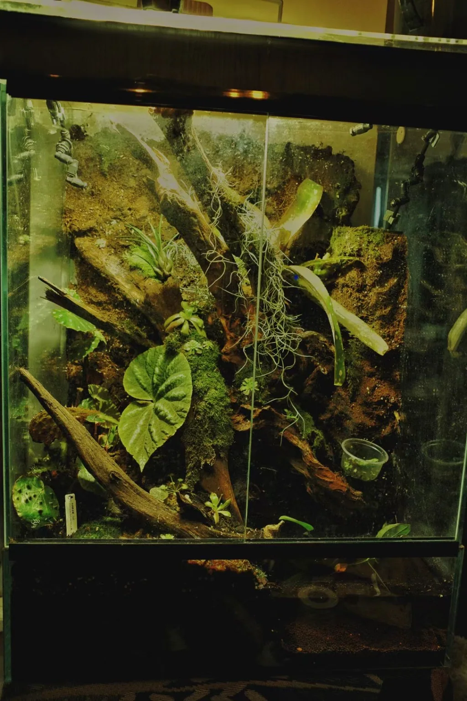
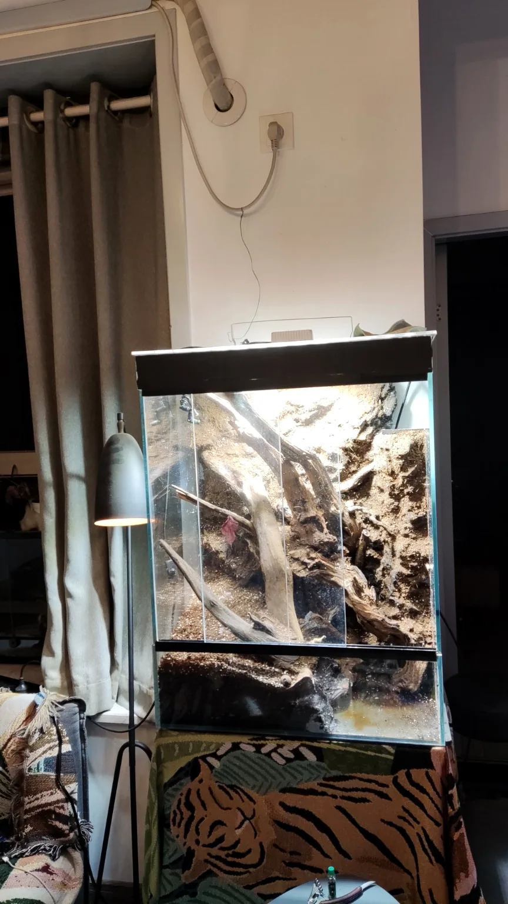
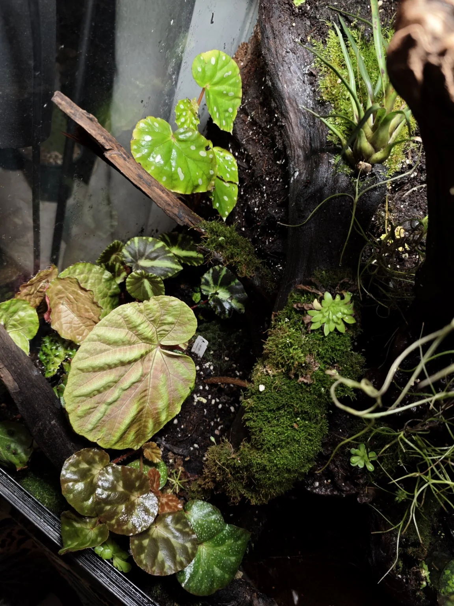
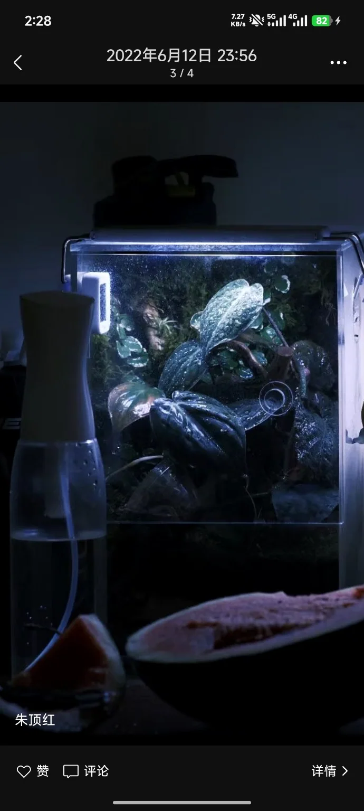
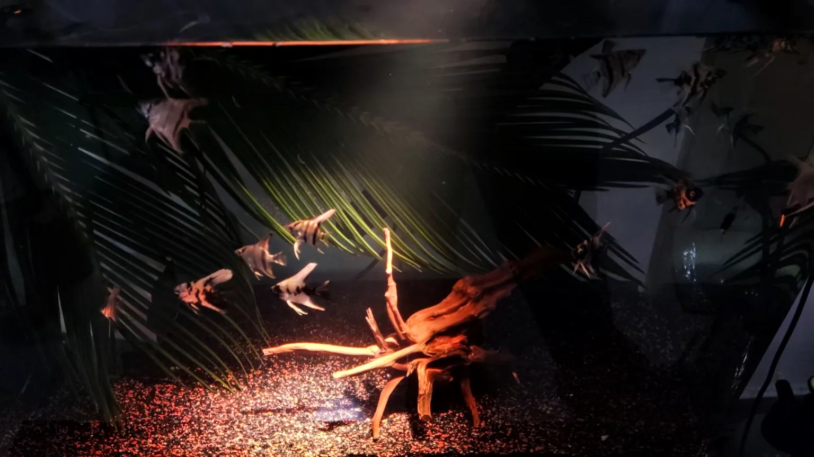
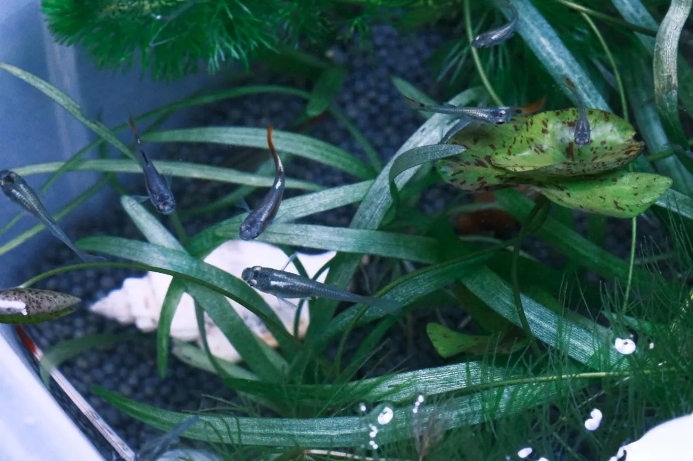
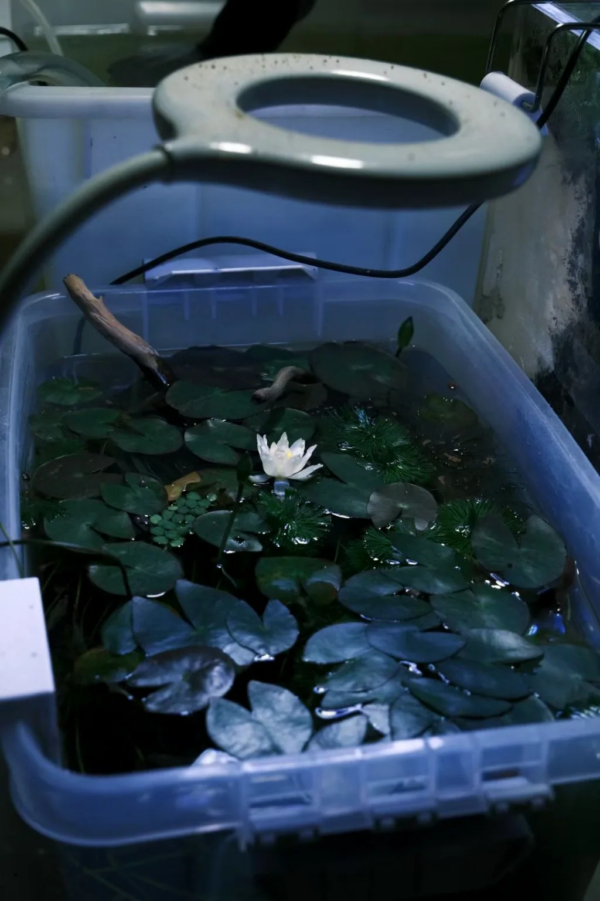
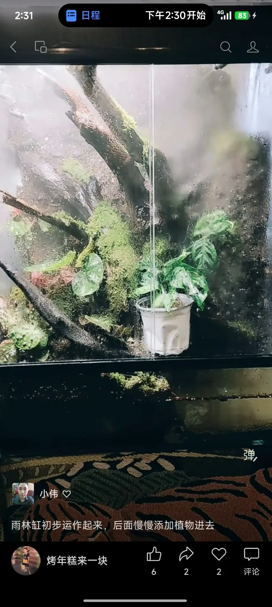
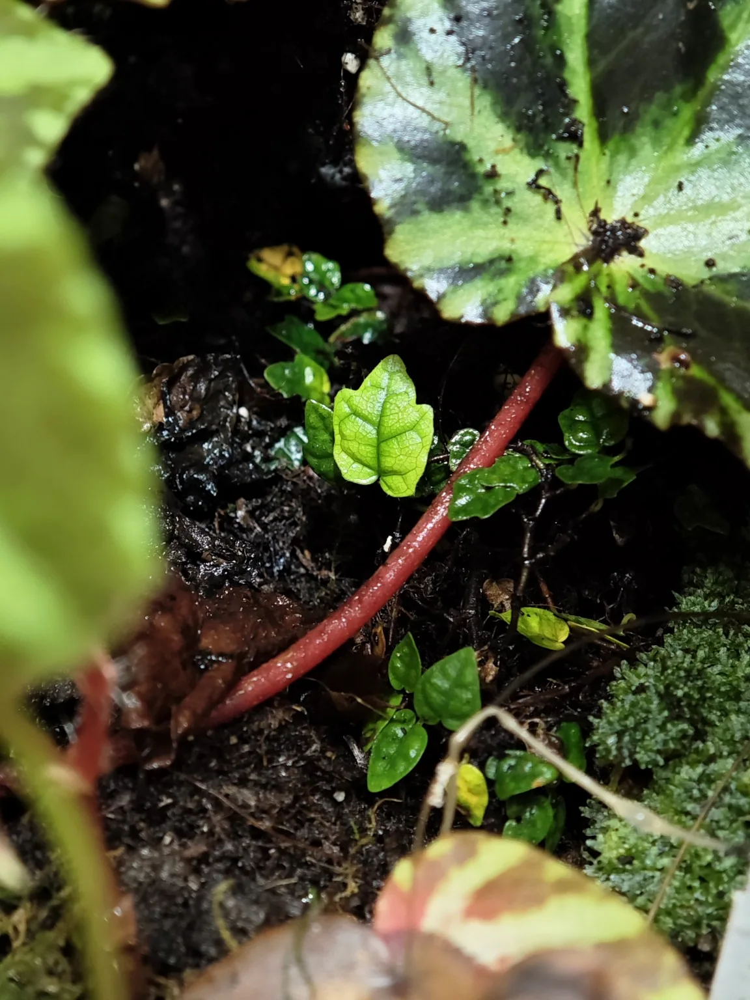
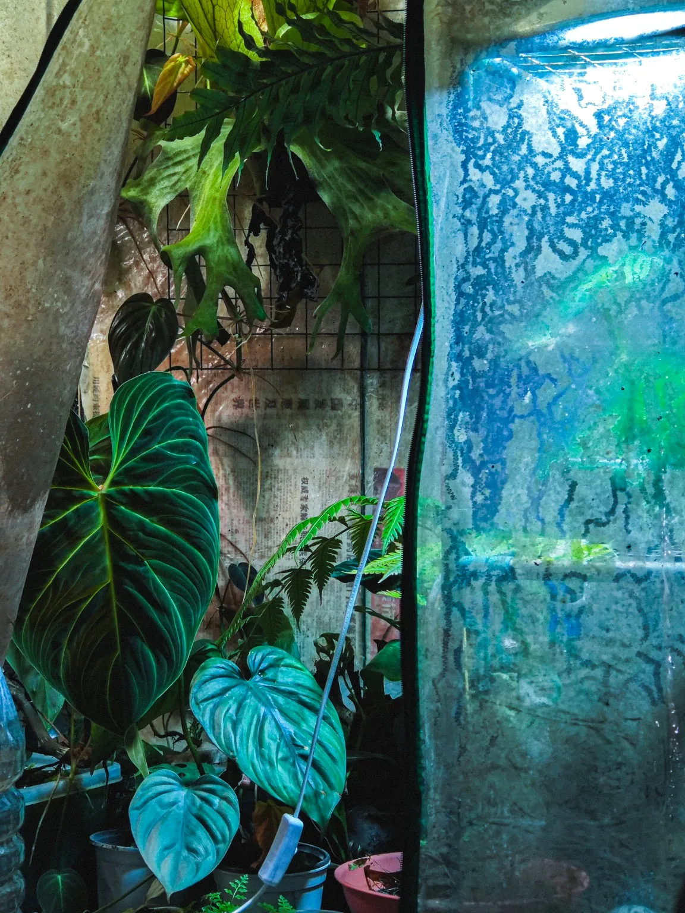

PROJECT 01 / LARGE RAINFOREST VIVARIUM
大型热带雨林生态缸



从骨架到雨林
独立完成沉木主体布局、立体背景塑形及植物配置。图中包含搭建阶段与初始完工状态；不代表长期成熟养护后的效果。
我是王浩，长期热爱水族生态、雨林植物与自然景观营造。这里收录了我个人独立构思、选材、搭建与养护的实际作品，包括不同尺寸的雨林缸、观赏鱼景观、水草与水生植物实践。
我关注的不只是完成时的外观，也包括景观结构、植物适应、生物饲养与后续维护。作品中的影像为真实拍摄，部分雨林缸记录的是刚刚完工、尚未进入成熟生长阶段的状态。
从结构搭建到植物细节，呈现实际制作过程，而不只是最终的成品照片。



独立完成沉木主体布局、立体背景塑形及植物配置。图中包含搭建阶段与初始完工状态；不代表长期成熟养护后的效果。

在有限空间中安排植物、景观层次和湿润环境。

以沉木、底床和鱼群形成富有自然氛围的水下景观。

水生植物种植、鱼类饲养与小型生态景观实践。
三段真实拍摄素材的网页展示版本。点击播放，观察景观的空间关系与细节。
沉木、观赏鱼与水下空间
初始完工阶段的真实记录
近景、植物配置与现场操作
为提高手机访问速度，以上为每段原视频截取的约 22 秒展示片段，保留原始景观内容。原始完整视频可另行提供。




水族造景 · 雨林缸制作 · 微型生态展示 · 植物景观
王浩 · 个人独立制作作品集